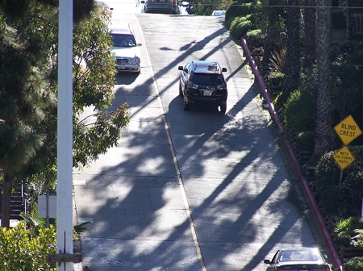
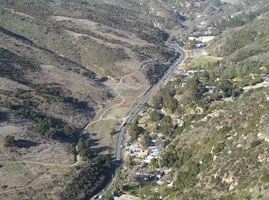

Home
Plants
Wildlife
Homes
Sunsets
Scenery
About
Steep 3rd street with stairway
Steep 3rd Street with traffic

Bird rock
Forest Avenue
Heisler Park walkway
Heisler Park view 2
Laguna Canyon view from Alta Laguna park

South Crescent Bay beach
Coast view from North Laguna hills
View from steep Viejo street